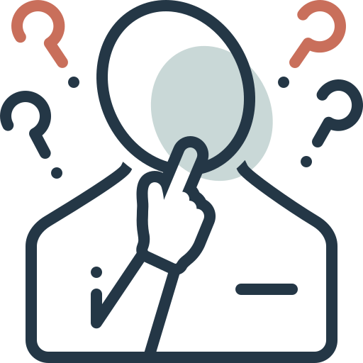

This page introduces implicit bias, Implicit Bias Test (IBT), and intersectionality.
You can also find some of our reflections and resources to learn more.
Implicit bias is an attitude or association that may affect how we see or respond to people without fully realizing it. This bias can be shaped by our experiences and what we learn over time.
Someone may believe they treat everyone equally, but still make quick assumptions about a person based on race, gender, age, or another characteristic. We think this is important because bias does not always happen on purpose, but it can still affect how people are treated.
You can see some everyday examples in the TEDx Talk Recognize Your Own Implicit Bias to Be Inclusive.
The IBT is a test that looks at automatic associations between different groups or ideas. It uses reaction time to see how quickly people connect certain categories with positive or negative concepts.
Our experiences with the test were a little different. Some results were unexpected, and we noticed that familiarity, pairing order, language, and how quickly we could make a decision could all affect the experience. Because of this, we think the test can help us notice automatic associations, but one result cannot fully explain someone's bias.
You can also try the Harvard Implicit Association Test (IAT) to see how the test works.
Intersectionality is a way to understand how different parts of a person's identity, such as race, gender, class, or culture, can work together and affect someone's experience at the same time instead of separately.
We noticed that people can experience the same situation differently because of their backgrounds, language, culture, or other parts of their identity. Looking at only one factor may not fully explain someone's experience. We also think individual experiences and larger social structures can both matter.
Kimberlé Crenshaw explains this idea further in the TED Talk The Urgency of Intersectionality.
After discussing these ideas together, we realized that bias is more complicated than one test result or one part of a person's identity. Personal experiences, cultural background, and larger social patterns can all affect how people see and experience the same situation.
